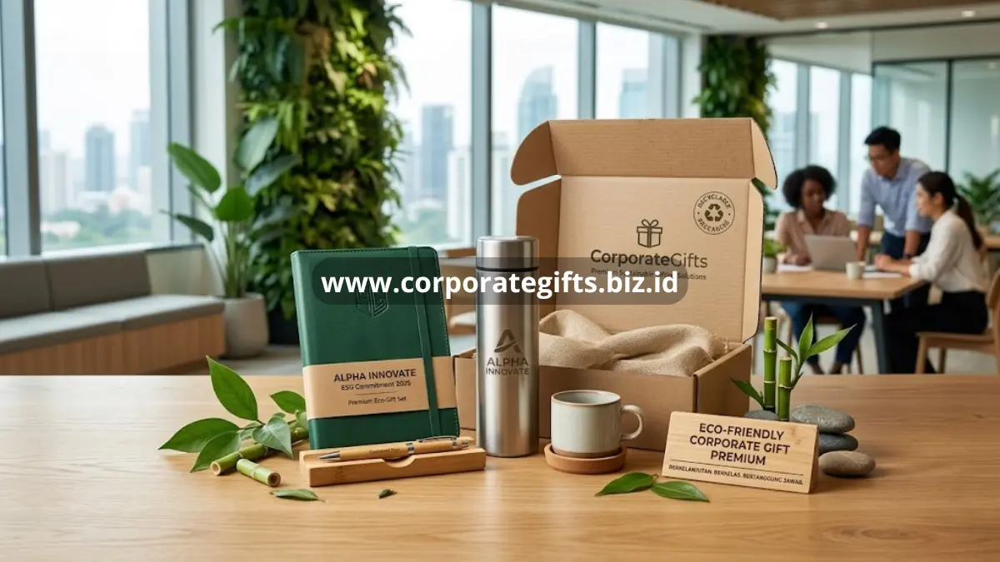

Poin Penting:
- Perusahaan semakin banyak beralih ke corporate gift ramah lingkungan untuk mendukung inisiatif ESG.
- Material seperti eco-leather, bambu, dan stainless steel bebas BPA menjadi pilihan utama.
- Koleksi eco-gift set premium tetap mengutamakan kesan mewah meski berbasis material berkelanjutan.
- CorporateGifts menyediakan eco-friendly gift set eksklusif dengan packaging recyclable.
Eco-friendly corporate gift premium menjadi salah satu tren gifting korporat yang terus berkembang seiring meningkatnya perhatian perusahaan terhadap isu keberlanjutan. Sebuah analisis statistik industri corporate gifting dari Ridgegap periode 2025 mencatat bahwa kategori sustainable gifting merupakan salah satu segmen dengan pertumbuhan tercepat, didorong oleh meningkatnya kesadaran lingkungan di kalangan pelaku bisnis. Tren ini membuat banyak perusahaan kini mempertimbangkan aspek material dan proses produksi, bukan hanya tampilan akhir, saat memilih corporate gift premium untuk klien maupun mitra bisnis mereka.
Mengapa Bisnis Mulai Beralih ke Eco-Friendly Corporate Gift Premium?
Bisnis mulai beralih ke eco-friendly corporate gift premium karena hadiah berbasis material berkelanjutan dinilai mampu mendukung komitmen ESG perusahaan sekaligus memperkuat citra sebagai organisasi yang peduli terhadap lingkungan di mata klien dan publik.
Mendukung Inisiatif ESG Perusahaan
Banyak perusahaan kini menjadikan aspek Environmental, Social, and Governance sebagai bagian dari strategi bisnis jangka panjang. Pemilihan corporate gift berbasis material ramah lingkungan menjadi salah satu cara nyata untuk merepresentasikan komitmen tersebut kepada klien, mitra, maupun investor, sekaligus menunjukkan konsistensi antara nilai perusahaan dan tindakan nyata di lapangan.
Meningkatkan Citra Perusahaan yang Peduli Lingkungan
Selain mendukung inisiatif internal, penggunaan eco-friendly corporate gift juga berdampak pada persepsi eksternal terhadap perusahaan. Klien dan mitra bisnis cenderung memberikan penilaian positif kepada perusahaan yang secara konsisten menunjukkan kepedulian terhadap isu lingkungan, termasuk melalui detail sekecil pemilihan hadiah korporat yang mereka berikan.

Material Ramah Lingkungan Apa yang Cocok untuk Corporate Gift Premium?
Material ramah lingkungan yang paling cocok untuk corporate gift premium meliputi eco-leather, bahan daur ulang berkualitas, kayu bambu alami, dan stainless steel bebas BPA, karena mampu menghadirkan kesan mewah tanpa mengabaikan aspek keberlanjutan.
Eco-Leather dan Bahan Daur Ulang Premium
Eco-leather menjadi alternatif material kulit konvensional yang tetap menghadirkan tampilan elegan dengan proses produksi yang lebih ramah lingkungan. Selain eco-leather, bahan daur ulang berkualitas tinggi seperti kanvas daur ulang juga mulai banyak digunakan pada produk seperti tas atau organizer korporat premium.
Kayu Bambu Alami dan Stainless Steel Bebas BPA
Bambu dikenal sebagai material yang tumbuh cepat dan mudah diperbarui, sehingga sering digunakan pada produk seperti pen set, organizer, hingga aksesori meja kerja. Sementara itu, stainless steel bebas BPA banyak digunakan pada produk drinkware karena selain ramah lingkungan, material ini juga aman digunakan untuk kebutuhan konsumsi harian.
Koleksi Eco-Friendly Gift Set Premium yang Tersedia untuk Korporat
Koleksi eco-friendly gift set premium yang banyak diminati korporat meliputi executive notebook dengan bamboo pen set, serta vacuum flask set berbahan stainless steel dengan kemasan yang dapat didaur ulang.
Eco-Friendly Executive Notebook dan Bamboo Pen Set
Notebook dengan kertas daur ulang yang dipadukan dengan pen set berbahan bambu menjadi salah satu kombinasi eco-gift set paling populer. Set ini cocok digunakan sebagai hadiah dalam berbagai kesempatan, mulai dari seminar korporat hingga hadiah apresiasi bagi klien dan mitra bisnis.
Stainless Steel Vacuum Flask Set dengan Packaging Recyclable
Vacuum flask berbahan stainless steel yang dikemas dalam packaging recyclable menjadi pilihan eco-gift set yang praktis sekaligus berkesan mewah. Kombinasi material tahan lama dengan kemasan ramah lingkungan menjadikan produk ini relevan untuk kebutuhan gifting korporat berskala besar maupun personal.
Pesan Eco-Friendly Corporate Gift Set Eksklusif Sekarang di CorporateGifts
CorporateGifts menghadirkan koleksi eco-friendly corporate gift premium yang dirancang untuk memenuhi kebutuhan perusahaan yang ingin menonjolkan komitmen keberlanjutan tanpa mengorbankan kesan eksklusif. Setiap produk dapat disesuaikan dengan identitas brand perusahaan, mulai dari pemilihan material hingga kemasan akhir.
Wujudkan citra perusahaan yang peduli lingkungan sekaligus berkelas dengan memesan eco-friendly corporate gift set eksklusif bersama CorporateGifts sekarang.
Eco-friendly corporate gift premium menjadi solusi hadiah korporat yang menjawab kebutuhan perusahaan modern untuk tetap relevan secara branding sekaligus bertanggung jawab terhadap lingkungan. Pemilihan material seperti eco-leather, bambu, dan stainless steel bebas BPA memungkinkan perusahaan menghadirkan kesan mewah tanpa mengabaikan komitmen keberlanjutan. CorporateGifts siap membantu mewujudkan eco-friendly gift set eksklusif sesuai kebutuhan dan identitas brand perusahaan Anda.
FAQ
1. Apa itu eco-friendly corporate gift premium?
Eco-friendly corporate gift premium adalah hadiah korporat berkualitas tinggi yang menggunakan material ramah lingkungan dan proses produksi yang berkelanjutan.
2. Mengapa perusahaan beralih ke eco-friendly corporate gift?
Karena hadiah berbahan berkelanjutan mendukung komitmen ESG dan memperkuat citra perusahaan yang peduli terhadap lingkungan di mata klien dan publik.
3. Material apa saja yang sering digunakan dalam eco-friendly gift set?
Material yang sering digunakan meliputi eco-leather, bahan daur ulang berkualitas tinggi, kayu bambu alami, serta stainless steel bebas BPA.
4. Apa keunggulan bambu sebagai bahan corporate gift?
Bambu adalah material yang tumbuh cepat dan mudah diperbarui, kuat, serta memberikan tampilan estetis dan elegan untuk produk seperti alat tulis dan organizer.
5. Apakah eco-friendly corporate gift masih bisa terlihat mewah?
Tentu saja, dengan pemilihan material berkualitas tinggi seperti eco-leather dan stainless steel, serta desain yang tepat, eco-friendly gift set tetap memancarkan kesan eksklusif dan mewah.
Butuh rekomendasi cepat untuk corporate gift?
Chat tim Pusat Souvenir & Merchandise Kantor untuk kurasi pilihan sesuai budget & kebutuhan brand Anda.